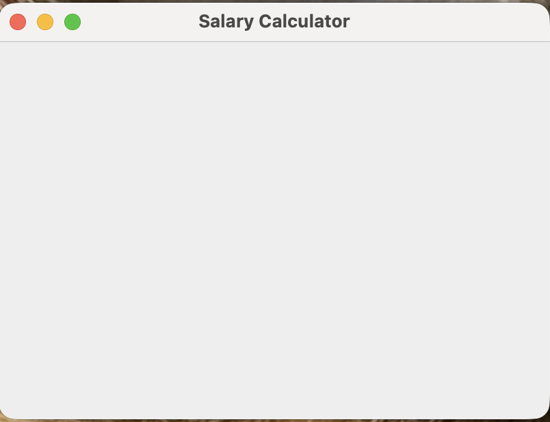
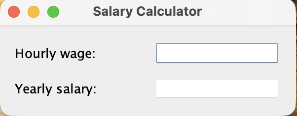
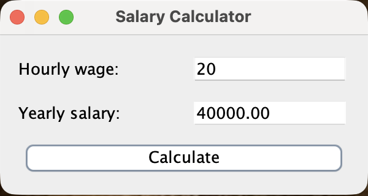

GUI Programming
Liting Zhang
University of West Florida
Today's Roadmap
Today we introduce GUI programming with one small example: a salary calculator.
What a GUI program is.
Basic Swing components:
JFrame,JLabel,JTextField, andJButton.How
JPanel,GridLayout, andBorderLayoutorganize components.How a button click runs code using a listener.
How to use
getText(),setText(), andtry/catch.
What You Should Be Able To Do
Explain what a graphical user interface is.
Identify labels, text fields, buttons, panels, and frames.
Explain why layout managers are useful.
Describe what happens when a button is clicked.
Read input from a text field using
getText().Display output using
setText().Use
try/catchto handle invalid input.
Console Program vs. GUI Program
So far, many of our programs have used text input and text output.
A console program prints text to the screen.
The user types input into the console.
The program often runs from top to bottom.
This is useful for learning basic programming.
Enter hourly wage: 20
Yearly salary: 40000.00Console programs use text interaction.
A GUI Uses Visual Objects
A graphical user interface lets the user interact with visual objects.
GUI means graphical user interface.
The user sees windows, labels, text fields, and buttons.
The user can type and click.
The program responds to the user's actions.
Salary Calculator
A GUI program uses visual components.
The Main Components in Our Example
| Component | Meaning | Example |
|---|---|---|
JFrame | Main window | Salary Calculator window |
JLabel | Text shown to the user | Hourly wage: |
JTextField | Text input or output box | 20, 40000.00 |
JButton | Clickable button | Calculate |
JPanel | Container for components | Input area |
JFrame: The Main Window
A JFrame is the main window of a Swing program.
JFrame frame = new JFrame("Salary Calculator");
frame.setDefaultCloseOperation(JFrame.EXIT_ON_CLOSE);
frame.pack();
frame.setVisible(true);The constructor creates the window and gives it a title.
setDefaultCloseOperation()tells the program to exit when the window closes.pack()sizes the window to fit its components.setVisible(true)shows the window.

JLabel, JTextField, and JButton
Each GUI component is created as an object.
JLabel wageLabel = new JLabel("Hourly wage:");
JLabel salaryLabel = new JLabel("Yearly salary:");
JTextField wageField = new JTextField(10);
JTextField salaryField = new JTextField(10);
JButton calculateButton = new JButton("Calculate");JLabeldisplays text.JTextFieldstores text.JButtoncreates a button the user can click.
Input Field and Output Field
The salary calculator uses two text fields, but they have different jobs.
JTextField wageField = new JTextField(10);
JTextField salaryField = new JTextField(10);
salaryField.setEditable(false);The wage field is for user input.
The salary field is for program output.
setEditable(false)means the user cannot type in the result field.
Two Text Fields
Why Do We Need Layout?
A layout manager decides where components appear in the window.
Without layout, components may not appear where we expect.
A layout manager organizes components for us.
For beginners,
GridLayoutandBorderLayoutare easier thanGridBagLayout.
Hourly wage label
Hourly wage field
Yearly salary label
Yearly salary field
JPanel: A Container
A JPanel is a container that can hold other components.
JPanel inputPanel = new JPanel();
inputPanel.add(wageLabel);
inputPanel.add(wageField);A panel helps us group related components.
We can add labels, text fields, buttons, or other panels.
Then we can add the panel to the frame.
GridLayout: Rows and Columns
GridLayout(2, 2) creates 2 rows and 2 columns.
JPanel inputPanel = new JPanel(new GridLayout(2, 2, 10, 10));
inputPanel.add(wageLabel);
inputPanel.add(wageField);
inputPanel.add(salaryLabel);
inputPanel.add(salaryField);The first component goes in row 0, column 0.
The second component goes in row 0, column 1.
Components are placed in the order they are added.

BorderLayout: Center and Bottom
BorderLayout can place components in areas such as center and south.
JPanel mainPanel = new JPanel(new BorderLayout(10, 10));
mainPanel.add(inputPanel, BorderLayout.CENTER);
mainPanel.add(calculateButton, BorderLayout.SOUTH);
frame.add(mainPanel);The input panel goes in the center.
The Calculate button goes at the bottom.
The frame adds one main panel.
- Example: SalaryWindow.java

A Button Click Is an Event
An event is something that happens while the program is running.
The user types an hourly wage.
The user clicks the Calculate button.
The program runs the code connected to that button.
The output field changes.
2020 * 40 * 5040000.00Listener Means Response Code
A listener waits for an event. For a button, we use an action listener.
calculateButton.addActionListener(event -> {
// code to run after the button is clicked
});The button does not calculate by itself.
The listener connects the button to code.
The code inside the braces runs after the click.
Reading and Writing Text Fields
A text field stores text, even when the text looks like a number.
String input = wageField.getText();
double wage = Double.parseDouble(input);
salaryField.setText("40000.00");getText()gets text from a text field.Double.parseDouble()converts text to a number.setText()changes what appears in a text field.
Button Click Code
When the button is clicked, the program reads the input, calculates, and displays the output.
calculateButton.addActionListener(event -> {
String input = wageField.getText();
double wage = Double.parseDouble(input);
double salary = wage * 40 * 50;
salaryField.setText(String.format("%.2f", salary));
});wageField.getText()reads the user's input.The salary is calculated using normal arithmetic.
salaryField.setText(...)displays the answer.
GUI Input Still Needs Checking
Users may type values the program cannot use.
The field may be empty.
The user may type letters instead of a number.
The user may type extra words, such as
20 dollars.The program should show a clear message instead of crashing.
Good input: 20
Bad input: abc
Bad input: 20 dollarstry/catch Handles Bad Input
A try/catch statement lets the program handle invalid input.
try {
double wage = Double.parseDouble(wageField.getText());
double salary = wage * 40 * 50;
salaryField.setText(String.format("%.2f", salary));
} catch (NumberFormatException ex) {
salaryField.setText("Invalid input");
}The
tryblock contains code that might fail.The
catchblock runs if the input is not a valid number.- Example: SalaryCalculatorFrame.java
Key Takeaways
GUI programs use visual objects so users can interact with a program more naturally.
A
JFrameis the main window.A
JLabeldisplays text.A
JTextFieldstores input or output text.A
JButtonlets the user click to start an action.A
JPanelgroups components.GridLayoutarranges components in rows and columns.BorderLayoutplaces components in larger regions.A listener responds to an event such as a button click.
getText()reads text, andsetText()displays text.try/catchhelps handle invalid user input.